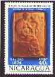
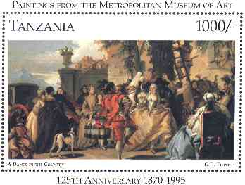
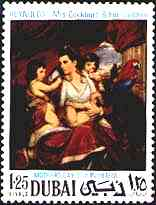
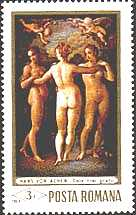
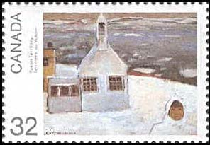
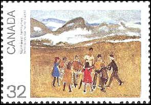

Errors on Art Stamps
Errare humanum est, perseverare diabolicum
The Gambia, Scott 1846 S/S features the painting "Adoration of the Child" of the Italian Renaissance painter Filippo Lippi (1406? - 1469). The designer shortened the name of the painter to Flippo Lippi (was the surface of the stamp too small for the full name?).
The Grenada Grenadines, Scott 2002 illustrates the painting "Festival of the Rose Garlands" by the Germany's great Renaissance artist Albrecht Durer (1471 - 1528). The designer changed the name of the painter to Albrecht Duer. Because of the similarity with the former case, I suspect that it was the same one who misspelled the name of Fra Filippo Lippi on the Gambia S/S.
Dominica, Scott 2018 (issued in 1997) shows the painting entitled Study of the Muse by Raphael. In fact, it is the work of Botticelli The Annunciation (hangs in Metropolitan Museum, N.Y.). Not quite the same thing. Source: Scott Stamp Monthly
Nicaragua, Scott C859 displays the marble low relief "Madonna of the Stairs" of the Italian genius Michelangelo Buonarotti. This relief is regarded to be the first sculpture of the artist and it is exposed in Casa Buonaroti in Florence. In the stamp issued by Nicaragua (see below, the first from left), the relief appear mirrored compared with the original, shown in the background of this page. Source: Mr. George Landsman, Israel.
Tanzania, Scott 1435 features the painting "A Dance in the Country" by the Vienna born artist Giovanni Battista Tiepolo (1696 - 1770). The text on the stamps displays incorrectly the initials as G.D. Tiepolo instead of G.B. Tiepolo. Here they haven't even gained some space with it!
|
 |
 |
 |
Dubai, 1968, SG 287, a painting by the British artist Sir Joshua Reynolds, 1723 - 1792. We can read Mrs. Cookburn & her children, instead of Mrs. Cockburn... Nobody is perfect. See the stamp above, the third from the left! Source: Stanley Gibbons Simplified Catalogue.
Gabon, 1972. The Rialto Bridge is a painting of the renown Venetian artist Antonio Canal, known as Il Canaletto (1697 - 1768) and not of another Venice painter named Caffi, as stated on the stamp (see below, the first from left). Source: Scott 1999, Volume 3.
The Triumphal Entry into Jerusalem, master of the Thuisan Alterpiece, depicting Jesus entering the city, days before his crucification, is framed on Grenada Scott 2816 in celebration of Christmas 1998. The stamp errs by captioning the painting as, The Trimphal Entry into Jerusalem. Source: Scott Stamp Monthly, July 1999.
 |
 |
The classical subject of The Three Graces, shown on the Romania, 1969, Scott 2093, was painted by Hans von Aachen (1552 - 1614), and not by Hans von Achen, the name that is displayed on the stamp shown above, on the right. A letter more or less, what a pedantry... BTW, a long time it was considered that the author was Allesandro Varotari, but this belongs to the history of art and not to the philately.
Another classical subject, "The Annunciation", painted by Sebastiano del Piombo, was issued on a souvenir sheet the 30th of October 1978 by Antigua (Stanley Gibbons, MS607). The work is incorrectly attributed to Rubens on the sheet. Source: S. G. Stamp Catalogue, Part 1. British Commonwealth.
 |
 |
The inscriptions are inversed on two Provincial Landscapes stamps, issued on June 29, 1984 by the Canadian PA. Scott 1018 shows Northwest Territories Landscapes and No. 1025 Yukon Territory church. Source: Scott 1999.